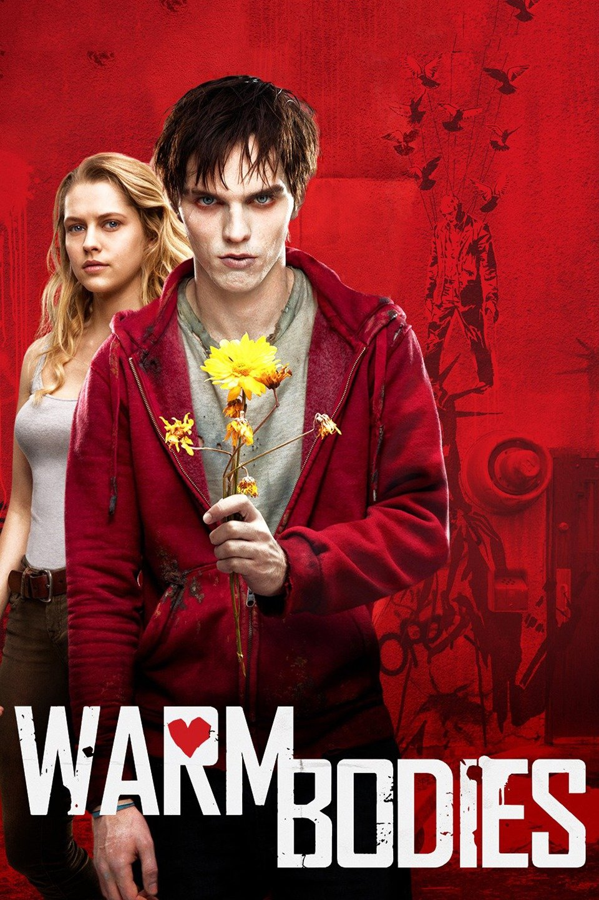

Warm Bodies

R is having a no-life crisis—he is a zombie. He has no memories, no identity, and no pulse,
but he is a little different from his fellow Dead. He may occasionally eat people, but he’d rather be riding abandoned airport escalators, listening to Sinatra in the cozy 747 he calls home, or collecting souvenirs from the ruins of civilization.